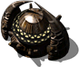

Гр. здание

В обычной игре построить нельзя
Панель информации в игре
- Энергии треб.:
- 0
- Энергия (HP):
- 500
- Время постройки:
- 0 с?
Затраты: Экстракт 0 Железо 0 Уголь 0 Титан 0
Описание
Здесь живут дроны инсекты.
Связанное
- Требует
- Матка
Параметры конфигурации, которых нет в игре (8)
SIGHT- 12
TRACE- 2
HEIGHT- 1
COMPONENT_QUANT- 1
SPRITE_QUANTITY- 1
TYPE- R_aBUDYNEKCYWILNY
AIBLD- AIBLD_IGNORE
AREA- 1, 1, 0, 0, 0, 0, 0, 0, 0, 0, 1, 1, 0, 0, 0, 0, 0, 0, 0, 0, 1, 1, 0, 0, 0, 0, 0, 0, 0, 0, 0, 0, 0, 0, 0, 0, 0, 0, 0, 0, 0, 0, 0, 0, 0, 0, 0, 0, 0, 0, 0, 0, 0, 0, 0, 0, 0, 0, 0, 0, 0, 0, 0, 0, 0, 0, 0, 0, 0, 0, 0, 0, 0, 0, 0, 0, 0, 0, 0, 0, 0, 0, 0, 0, 0, 0, 0, 0, 0, 0, 0, 0, 0, 0, 0, 0, 0, 0, 0, 0